MINECRAFT / MOB ARCHIVE
MOB COLLECTION
เว็บไซต์รวบรวมและจัดหมวดหมู่ม็อบต่าง ๆ ภายในเกม Minecraft เพื่อให้สามารถค้นหา และศึกษาข้อมูลของม็อบแต่ละประเภทได้ง่ายขึ้น ตอนนี้เป็นแค่ส่วนหนึ่งเท่านั้นกำลังอัพเข้ามา 0.1
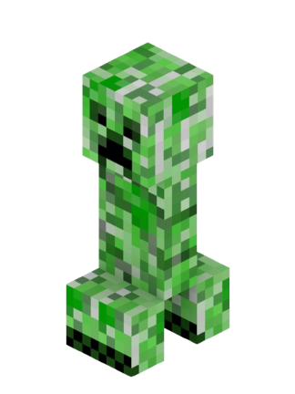
FEATURED MOB / HOSTILE
CREEPER
Creeper เป็นม็อบศัตรูที่พบได้ในโลก Overworld มีลักษณะเด่นคือเคลื่อนที่เข้าหาผู้เล่นอย่างเงียบ ๆ และจะระเบิดเมื่อเข้าใกล้ผู้เล่นมากเกินไป
ALL MOBS
ไม่พบม็อบที่ค้นหา
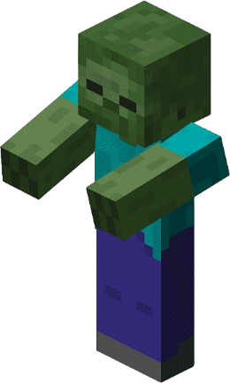
Zombie
Creeper
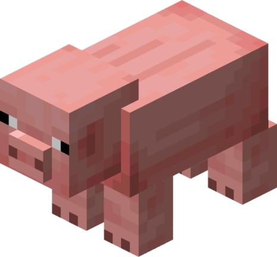
Pig
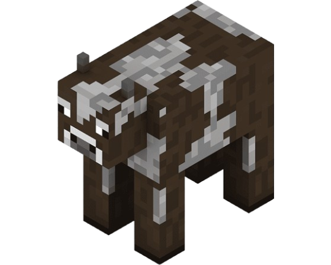
Cow
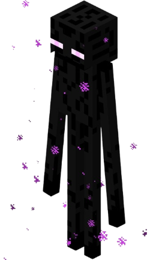
Enderman

Ender Dragon
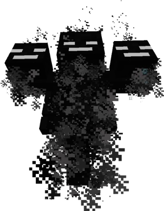
Wither
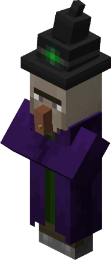
Witch
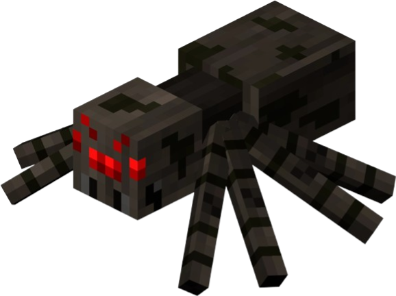
Spider
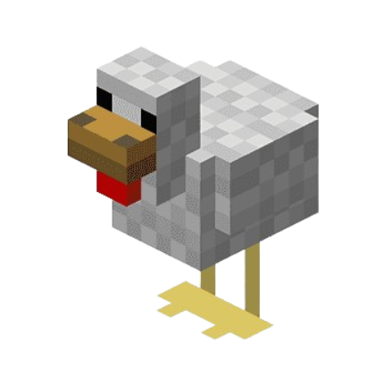
Chicken
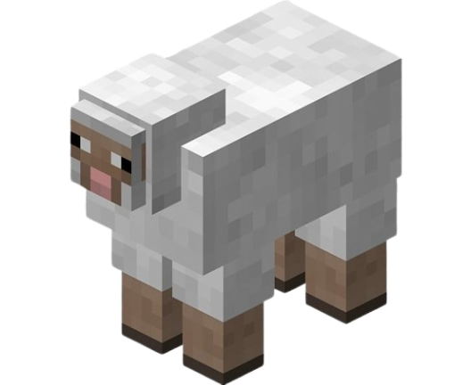
Sheep
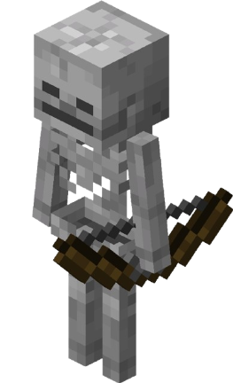
Skeleton
ABOUT / THE PROJECT
ABOUT THIS COLLECTION
Minecraft Mob Collection เป็นเว็บไซต์ที่รวบรวมข้อมูล ม็อบภายในเกม Minecraft โดยจัดแบ่งตามประเภทต่าง ๆ เพื่อให้ผู้ที่สนใจสามารถค้นหาและศึกษาข้อมูล ของม็อบแต่ละตัวได้ง่ายขึ้น
MOBS
CATEGORIES
COLLECTION